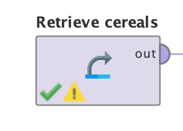
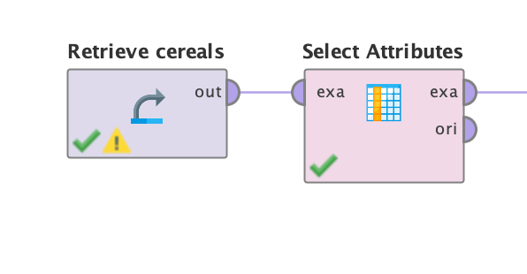
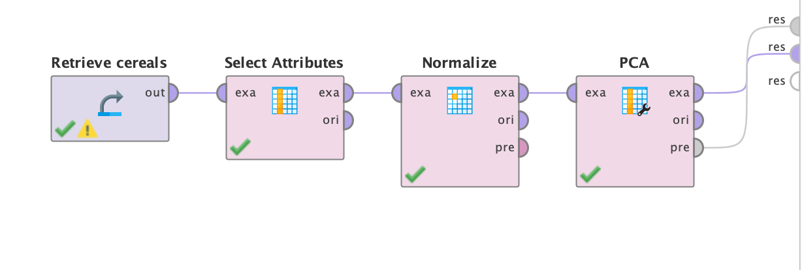
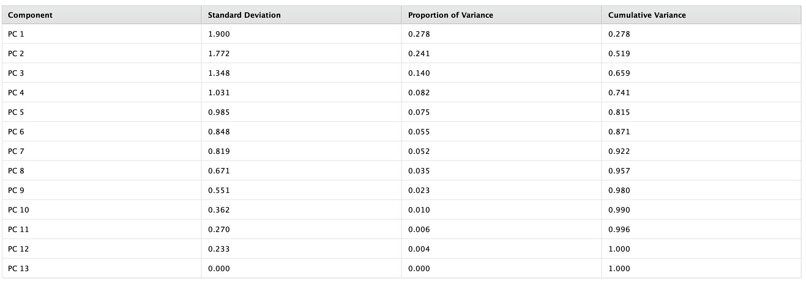
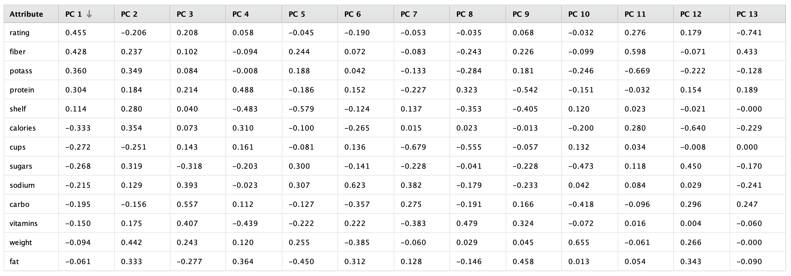
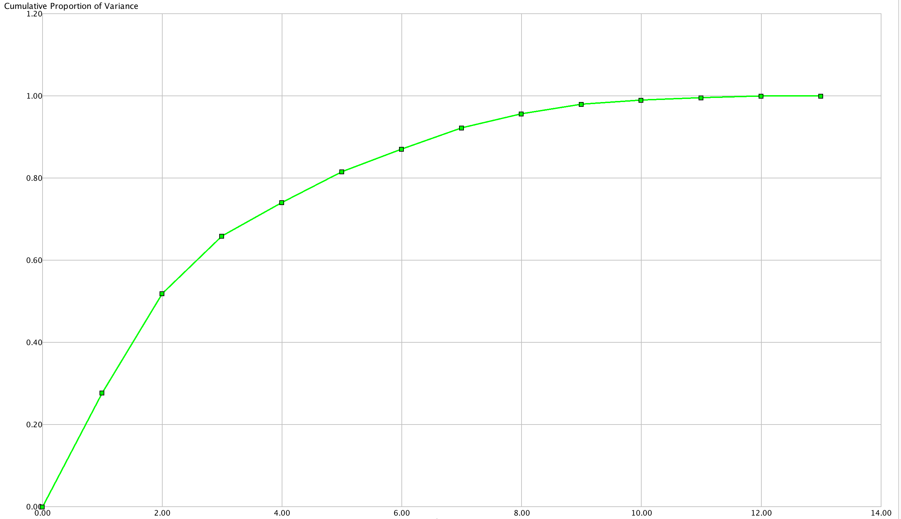

Cereales
Herramienda RapidMiner
Problema
Determinar cuales son los cereales para un buen desayuno.
Objetivo
Reducir el conjunto de 13 predictores a una lista mucho menor, utilizando PCA.
Dataset
Fuente Kaggle (Cereals)El dataset contiene con 77 registos sobre ratings e información nutricional de cereales para el desayuno:
Atributos
Nombre: Nombre del cereal.
Fabricante: cereal
A = productos alimenticios caseros estadounidenses;
G = molinos generales
K = Kelloggs
N = Nabisco
P = Publicar
Q = avena cuáquera
R = Ralston Purina
tipo: frio, caliente
calorías: calorías por porción
proteína: gramos de proteína
grasa: gramos de grasa
sodio: miligramos de sodio
fibra: gramos de fibra dietética
carbo: gramos de carbohidratos complejos
azúcares: gramos de azúcares
potass: miligramos de potasio
vitaminas: vitaminas y minerales: 0, 25 o 100, lo que indica el porcentaje
típico de recomendaciones de la FDA
estante: estante de exhibición (1, 2 o 3, contando desde el piso)
peso: peso en onzas de una porción
tazas: cantidad de tazas en una porción
calificación: una calificación de los cereales
Preparación de los datos:
Remover los atributos no numericos del dataset.
(Nombre,Fabricante,Tipo)
Modelado en RapidMiner:
Como primer paso del modelado insertamos en dataset.
A travez del modulo "Select Attributes" eliminamos del modelo los datos no nomericos

Posterior utilizamos el modulo de Normalize debido a que PCA es muy sensible a la escala de los
datos.
Aplicamos el modulo de PCA con los parametros de reducción de dimensionalidad "keep variance" y umbral de varianza en 0.95
Resultados:
Analizdo los resultados podemos que los componentes principales PC1, PC2, PC3 son los que nos
dan mayor ganacia de informacion
Dichos componentes los atriburos que más información nos brindan son:
- rating
- fiber
- potass
- protein
- shelf
- calories
Eigenvalues
Eigenvectors
Cumulative Variance Plot
